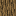
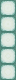
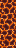

Pedra

Calcita

Tufo

Bloco de grama

Terra

Terra infértil

Podzol

Nicélio

Pedregulho

Tábuas

Rocha-mãe

Areia

Cascalho

Minério de ouro

Minério de ferro

Minério de carvão

Minério de ouro do Nether

Troncos
Esponja

Esponja úmida

Vidro

Minério de lápis-lazúli

Bloco de lápis-lazúli

Arenito

Lã

Bloco de ouro

Bloco de ferro

Laje
Tijolos

Estante de livros

Pedregulho musgoso

Obsidiana

Bloco de púrpura

Pilar de púrpura

Escadas
Minério de diamante

Bloco de diamante

Minério de redstone

Gelo

Bloco de gelo

Argila

Abóbora

Netherrack

Fogo

Areia das almas

Terra das almas

Basalto

Pedra luminosa

Abóbora de Hallowen

Tijolos de pedra

Melancia

Micélio

Tijolos do Nether

Pedra do end

Tijolos de pedra do End

Minério de esmeralda

Bloco de esmeralda

Minério de quartzo do Nether

Bloco de quartzo

Terracota colorida

Fardo de feno

Terracota

Bloco de carvão

Gelo compactado

Vidro tingido

Prismarinho

Tijolos de prismarinho

Prismarinho escuro

Lanterna do mar
Bloco de magma
Bloco de fungos do Nether

Tijolos vermelhos do Nether

Bloco de ossos

Concreto

Cimento

Blocos de coral

Gelo azul

Bloco de algas secas

Bloco de netherita

Detritos ancestrais

Obsidiana chorona

Pedra-negra

Pedra-negra dourada

Pedra negra polida

Tijolos de pedra-negra polida

Bloco de cobre

Cobre lapidado